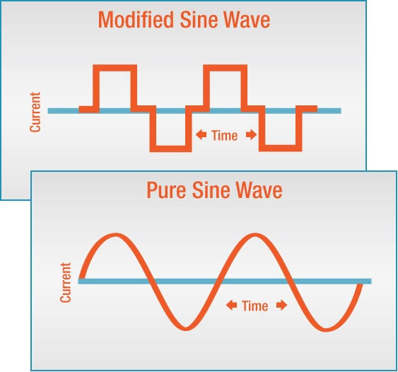

This article gives you some of the information you'll need to choose the right inverter and use it wisely.
Independent electric energy systems are untethered from the electrical utility grid. They vary in size from tiny yard lights to remote homes, villages, parks, and medical and military facilities. They also include mobile, portable, and emergency backup systems. Their common bond is the storage battery, which absorbs and releases energy in the form of direct current (DC) electricity. In contrast, the utility grid supplies you with alternating current (AC) electricity. AC is the standard form of electricity for anything that "plugs in" to utility power. DC flows in a single direction. AC alternates its direction many times per second. AC is used for grid service because it is more practical for long distance transmission.
An inverter converts DC to AC, and also changes the voltage. In other words, it is a power adapter. It allows a battery-based system to run conventional appliances through conventional home wiring. There are ways to use DC directly, but for a modern lifestyle, you will need an inverter for the vast majority, if not all of your loads (loads are devices that use energy). Incidentally, there is another type of inverter called grid-interactive. It is used to feed solar (or other renewable) energy into a grid-connected home and to feed excess energy back into the utility grid. If such a system does not use batteries for backup storage, it is not independent from the grid, and is not within the scope of this article.
Outwardly, an inverter looks like a box with one or two switches on it, but inside there is a small universe of dynamic activity. A modern home inverter must cope with a wide range of loads, from a single night light to the big surge required to start a well pump or a power tool. The battery voltage of a solar or wind system can vary as much as 35 percent (with varying state of charge and activity). Through all of this, the inverter must regulate the quality of its output within narrow constraints, with a minimum of power loss. This is no simple task. Additionally, some inverters provide battery backup charging, and can even feed excess power into the grid.
To choose an inverter, you should first define your needs. Then you need to learn about the inverters that are available. Inverter manufacturers print everything you need to know on their specification sheets (commonly called "spec sheets"). Here is a list of the factors that you should consider.
Where is the inverter to be used? Inverters are available for use in buildings (including homes), for recreational vehicles, boats, and portable applications. Will it be connected to the utility grid in some way? Electrical conventions and safety standards differ for various applications, so don't improvise.
The DC input voltage must conform to that of the electrical system and battery bank. 12 volts is no longer the dominant standard for home energy systems, except for very small, simple systems. 24 and 48 volts are the common standards now. A higher voltage system carries less current, which makes system wiring cheaper and easier. The inverter's AC output must conform to the conventional power in the region in order to run locally available appliances. The standard for AC utility service in North America is 115 and 230 volts at a frequency of 60 Hertz (cycles per second). In Europe, South America, and most other places, it's 220 volts at 50 Hertz.
An inverter should be certified by an independent testing laboratory such as UL, ETL, CSA, etc., and be stamped accordingly. This is your assurance that it will be safe, will meet the manufacturer's specifications, and will be approved in an electrical inspection. There are different design and rating standards for various application environments (buildings, vehicles, boats, etc.). These also vary from one country to another.
How much load can an inverter handle? Its power output is rated in watts (watts = amps x volts). There are three levels of power rating-a continuous rating, a limited-time rating, and a surge rating. Continuous means the amount of power the inverter can handle for an indefinite period of hours. When an inverter is rated at a certain number of watts, that number generally refers to its continuous rating. Thee limited-time rating is a higher number of watts that it can handle for a defined period of time, typically 10 or 20 minutes. The inverter specifications should define these ratings in relation to ambient temperature (the temperature of the surrounding atmosphere). When the inverter gets too hot, it will shut off. This will happen more quickly in a hot atmosphere. The third level of power rating, surge capacity, is critical to its ability to start motors, and is discussed below. Someme inverters are designed to be interconnected or expanded in a modular fashion, in order to increase their capacity. The most common scheme is to "stack" two inverters. A cable connects the two inverters to synchronize them so they perform as one unit.
Some inverters produce "cleaner" power than others. Simply stated, "sine wave" is clean; anything else is dirty. A sine wave has a naturally smooth geometry, like the track of a swinging pendulum. It is the ideal form of AC power. The utility grid produces sine wave power in its generators and (normally) delivers it to the customer relatively free of distortion. A sine wave inverter can deliver cleaner, more stable power than most grid connections.
How clean is a "sine wave"? The manufacturer may use the terms "pure" or "true" to imply a low degree of distortion. The facts are included in the inverter's specifications. Total harmonic distortion (THD) lower than 6 percent should satisfy normal home requirements. Look for less than 3 percent if you have unusually critical electronics, as in a recording studio for example. Other specs are important too. RMS voltage regulation keeps your lights steady. It should be plus or minus 5 percent or less. Peak voltage (Vp) regulation needs to be plus or minus 10 percent or less.
A "modified sine wave" inverter is less expensive, but it produces a distorted square waveform that resembles the track of a pendulum being slammed back and forth by hammers. In truth, it isn't a sine wave at all. The misleading term "modified sine wave"
was invented by advertising people. Engineers prefer to call it "modified square wave." The "modified sine wave" has detrimental effects on many electrical loads. It reduces the energy efficiency of motors and transformers by 10
to 20 percent. The wasted energy causes abnormal heat which reduces the reliability and longevity of motors and transformers and other devices, including some appliances and computers. The choppy waveform confuses some digital
timing devices.
About 5 percent of household appliances simply won't work on modified sine wave power at all. A buzz will be heard from the speakers of nearly every audio device. An annoying buzz
will also be emitted by some fluorescent lights, ceiling fans, and transformers. Some microwave ovens buzz or produce less heat. TVs and computers often show rolling lines on the screen. Surge protectors may overheat and should
not be used. Modified sine wave inverters were tolerated in the 1980s, but since then, true sine wave inverters have become more efficient and more affordable. Some people compromise by using a modified wave inverter to run their
larger power tools or other occasional heavy loads, and a small sine wave inverter to run their smaller, more frequent, and more sensitive loads. Modified wave inverters in renewable energy systems have started fading into history.
It is not possible to convert power without losing some of it (it's like friction). Power is lost in the form of heat. Efficiency is the ratio of power out to power in, expressed as a percentage. If the efficiency is 90 percent, 10 percent of the power is lost in the inverter. The efficiency of an inverter varies with the load. Typically, it will be highest at about two thirds of the inverter's capacity. This is called its "peak efficiency." The inverter requires some power just to run itself, so the efficiency of a large inverter will be low when running very small loads.
In a typical home, there are many hours of the day when the electrical load is very low. Under these conditions, an inverter's efficiency may be around 50 percent or less. The full story is told by a graph of efficiency vs. load, as published by the inverter manufacturer. This is called the "efficiency curve." Read these curves carefully. Some manufacturers cheat by starting the curve at 100 watts or so, not at zero! Because the efficiency varies with load, don't assume that an inverter with 93 percent peak efficiency is better than one with 85 percent peak efficiency. If the 85 percent efficient unit is more efficient at low power levels, it may waste less energy through the course of a typical day.
An inverter's sensitive components must be well protected against surges from nearby lightning and static, and from surges that bounce back from motors under overload conditions. It must also be protected from overloads. Overloads can be caused by a faulty appliance, a wiring fault, or simply too much load running at one time. An inverter must include several sensing circuits to shut itself off if it cannot properly serve the load. It also needs to shut off if the DC supply voltage is too low, due to a low battery state-of-charge or other weakness in the supply circuit. This protects the batteries from over-discharge damage, as well as protecting the inverter and the loads. These protective measures are all standard on inverters that are certified for use in buildings.
At a remote site, a water well or pressure pump often places the greatest demand on the inverter. It warrants special consideration. Most pumps draw a very high surge of current during startup. The inverter must have sufficient surge capacity to handle it while running any other loads that may be on. It is important to size an inverter sufficiently, especially to handle the starting surge. Oversize it still further if you want it to start the pump without causing lights to dim or blink. Ask your supplier for help doing this because inverter manufacturers have not been supplying sufficient data for sizing in relation to pumps.
Backup battery charging is essential to most renewable energy systems because there are likely to be occasions when the natural energy supply is insufficient. Some inverters have a built-in battery charger that will recharge the battery bank whenever power is applied from an AC generator or from the utility grid (if the batteries are not already charged). This also means that an inverter can be a complete emergency backup system for on-grid power needs (just add batteries). A backup battery charger doesn't have to be built into the inverter. Separate chargers are, in some cases, superior to those built into inverters. This is especially true in the case of low switching frequency inverters, which tend to require an over-sized generator to produce the full rated charge current.
The specifications that relate to battery charging systems include maximum charging rate (amps) and AC input power requirements. The best chargers have two or three-stage charge control, accommodation of different battery types (flooded or sealed), temperature compensation, and other refinements. Be careful when sizing a generator to meet the requirements of an inverter/charger. Some inverters require that the generator be over-sized (because of low power factor, which is beyond the scope of this article). Be sure to get experienced advice on this, or you may be disappointed by the results.
Some loads absorb the AC wave's energy with a time delay (like towing a car with a rubber strap). These are called inductive loads. Motors are the most severely inductive loads. They are found in well pumps, washing machines, refrigerators, power tools,
etc. TVs and microwave ovens are also inductive loads. Like motors, they draw a surge of power when they start. If an inverter cannot efficiently feed an inductive load, it may simply shut down instead of starting the device. If
the inverter's surge capacity is marginal, its output voltage will dip during the surge. This can cause a dimming of the lights in the house, and will sometimes crash a computer.
Any weakness in
the battery and cabling to the inverter will further limit its ability to start a motor. A battery bank that is undersized, in poor condition, or has corroded connections, can be a weak link in the power chain. The inverter cables
and the battery interconnect cables must be big, and I mean REALLY big, perhaps the size of a large thumb! The spike of DC current through these cables is many hundreds of amps at the instant of motor starting. Follow the inverter's
instruction manual when sizing the cables, or you'll cheat yourself. Coat battery connections with a protective coating to reduce corrosion.
Idle power is the consumption of the inverter when it is on, but no loads are running. It is "wasted" power, so if you expect the inverter to be on for many hours during which there is very little load (as in most residential situations), you want this to be as low as possible. Typical idle power ranges from 15 watts to 50 watts for a home-size inverter. An inverter's spec sheet may describe the inverter's "idle current" in amps. To get watts, just multiply the amps times the DC voltage of the system.
There are two ways to build an inverter. Without diving into theory, I'll simply say that there are differences in weight, cost, surge capacity, idle power, and noise. A low switching frequency inverter is big and heavy (generally about 20 pounds (10 kg) per kilowatt), and more expensive. It has the high surge capacity (four to eight times the continuous capacity) needed to start large motors. Beware of the acoustical buzz that low switching frequency inverters make. If you install one near a living space, you may be unhappy with the noise.
A high switching frequency inverter is much smaller and lighter (generally about 5 pounds (2.5 kg) per kilowatt), and also less expensive. It has less surge capacity, typically about two times the continuous capacity. It produces little or no audible noise. The idle power is generally higher. If the inverter is over-sized for motor starting, its idle power will be higher yet, and may be prohibitive. Most homes that have a well pump or other motors greater than 1 HP will find a low switching frequency inverter to be more economical. Both types of inverter have their virtues. Some people "divide and conquer" by splitting their loads and using two inverters. This adds a measure of redundancy. If one ever fails, the other one can serve as backup.
Inverter idling can be a substantial load on a small power system. Most inverters made for home power systems have automatic load-sensing. The inverter puts out a brief pulse of power about every second (more or less). When you switch on an AC load, it senses the current draw and turns itself on. Manufacturers have various names for this feature, including "load demand," "sleep mode," "power saver," "autostart," and "standby." Automatic on/off can make life awkward because a tiny load may not trigger the inverter to turn on or stay on. For example, a washing machine may pause between cycles, with only the timer running.
The timer draws less than 10 watts. The inverter's turn-on "threshold" may be 10 or 15 watts. The inverter shuts off and doesn't come back on until it sees an additional load from some other appliance. You may have to leave a light on while running the washer. Some people can't adapt to such situations. Therefore, inverters with automatic on/off also have an always-on setting. With it, you can run your low-power night lights, your clocks, fax, answering machine and other tiny loads, without losing continuity. In that case, a good system designer will add the inverter's idle power into the load calculation (24 hours a day). The cost of the power system will be higher, but it will meet the expectations of modern living.
High tech consumers (most of us Americans) are stuck with gadgets that draw power whenever they are plugged in. Some of them use power to do nothing at all. An example is a TV with a remote control. Its electric eye system is on day and night, watching for your signal to turn the screen on. Every appliance with an external wall-plug transformer uses power even when the appliance is turned off. These little demons are called "phantom loads" because their power draw is unexpected, unseen, and easily forgotten.
A similar concern is "idling loads." These are devices that must be on all the time in order to function when needed. These include smoke detectors, alarm systems, motion detector lights, fax machines, and answering machines. Central heating systems have
a transformer in their thermostat circuit that stays on all the time. Cordless (rechargeable) appliances draw power even after their batteries reach a full charge. If in doubt, feel the device. If it's warm, that indicates wasted
energy. How many phantom or idling loads do you have?
There are several ways to cope with phantom and idling loads:
Be careful and honest if you contemplate avoiding all phantom and idling loads. You cannot always anticipate future needs or human behavior.
A good inverter is an industrial quality device that is proven reliable, certified for safety, and can last for decades. A cheap inverter may soon end up in the junk pile, and can even be a fire hazard. Consider your inverter to be a foundation component. Buy a good one that allows for future expansion of your needs.
Choosing an inverter is not a difficult task. Define where it is to be used. Define what type of loads (appliances) you will be powering. Determine the maximum power the inverter will need to handle. Is the quality of the power critical? Does size and weight matter?
Your next step is to learn what inverters are available on the market. Study advertisements and catalogs, or ask your favorite dealer. It is best to listen to professional advice, and to purchase your equipment from a trained and experienced dealer/installer. We hope this article helps you make the right choice.